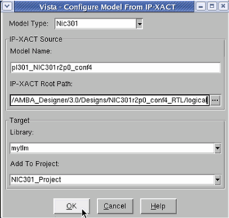

Creating a TLM Model Using the GUI
To create a fully configured TLM2.0 model out of the IP-XACT RTL description created by the ARM AMBA Designer (ADR) tool using a graphical flow:
- Create the needed NIC301 RTL component using the ARM ADR (AMBA Designer) tool.
- In the ARM ADR (AMBA Designer) tool, generate the IP-XACT description for the created component.
The IP-XACT description is saved by the ADR tool, together with the component HDL files, in a predefined directory structure; see “ARM ADR Tool Directory Structure”.
- In Vista, select Tools > Configure from IP-XACT.
The Configure Model From IP_XACT dialog, as shown in Figure D‑1, opens.
Figure D‑1.
Configuration Dialog

- In the configuration dialog, specify the following:
- Model Type — the type of component to be created. (Currently only Nic301 is available.)
- Output Library — the name of the Vista library in which to store the generated TLM component.
- Vista Project (optional) — An existing Vista project in which to add the created component (and its subcomponents).
- Click OK.
The configured TLM2.0 MB model is added to the specified output library. The new TLM model has the same name as the ARM component.
- If required, open the generated TLM model to further configure its parameters. For a list of the NIC301 TLM model parameters, see “NIC301 Model Parameters”.
- Generate the model to save it.
All needed subcomponents together with the code of the TLM model and its internal hierarchy are saved. For the names and purpose of the additionally created subcomponent models, see “Generated Models”.